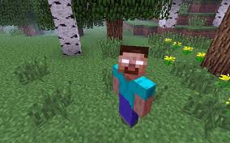
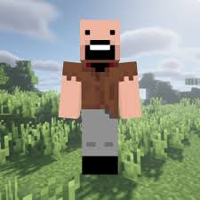
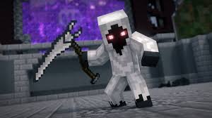

Herobrine

Esta é a primeira lenda do famoso jogo minecraft, que surgiu por volta de 2012
Notch

Esse foi o criador do jogo Minecraft e da empresa mojang, na alpha de seu jogo o nome se chamava cave game, por volta de 2014 ele acabou vendendo a empresa por 2 bilhoes e meio de dolares
Entity 303

"O Novo Herobrine". De acordo com a pasta, um ex-funcionário da Mojang foi demitido por Notch (o criador do Minecraft). Agora ele quer vingança contra a Mojang e os jogadores de Minecraft.